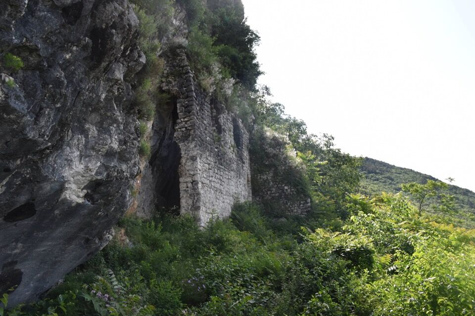
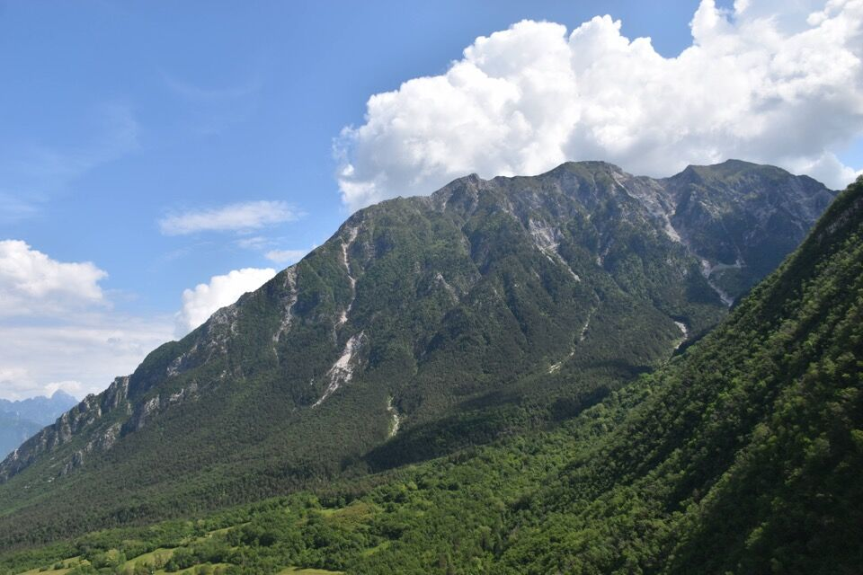
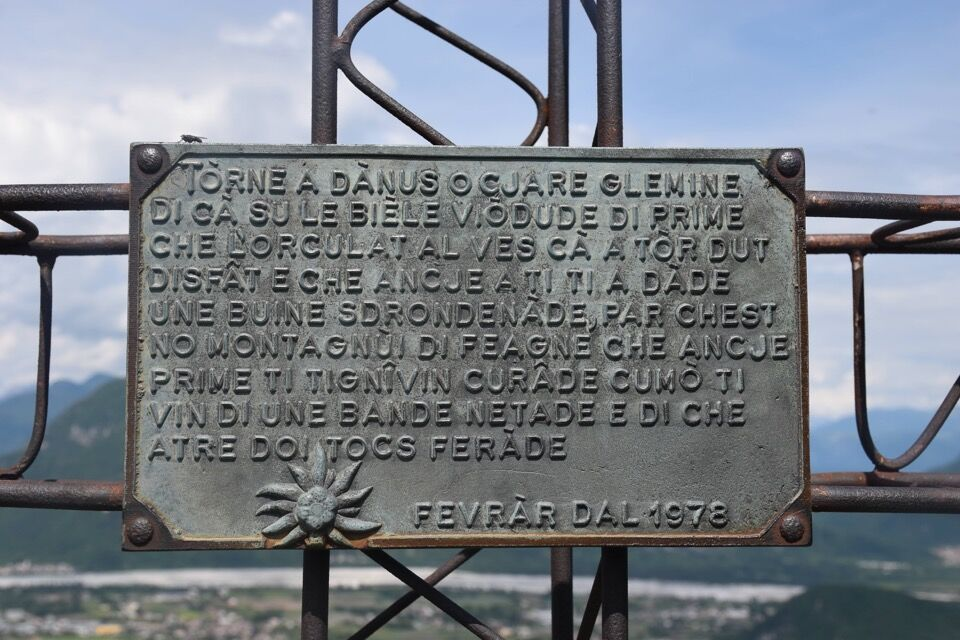
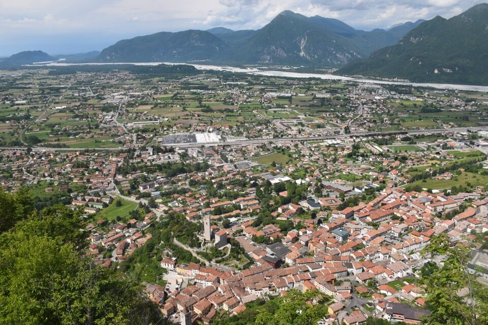
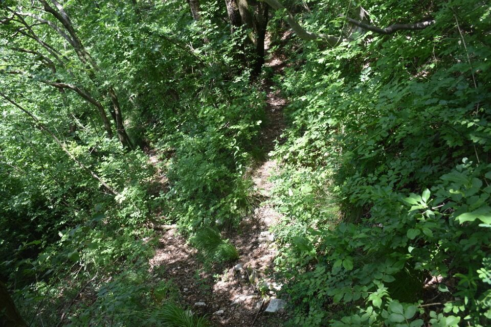
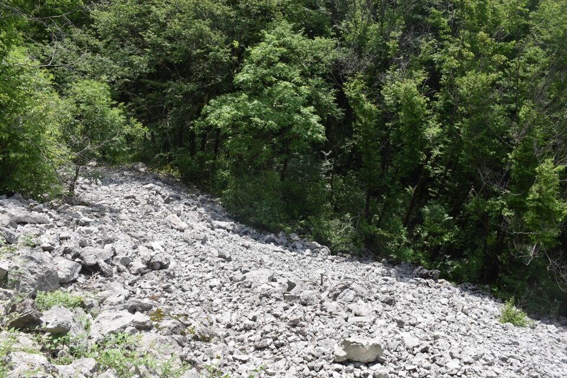
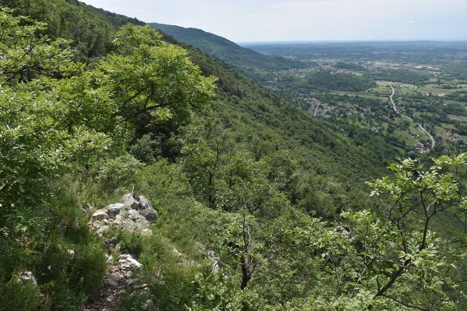
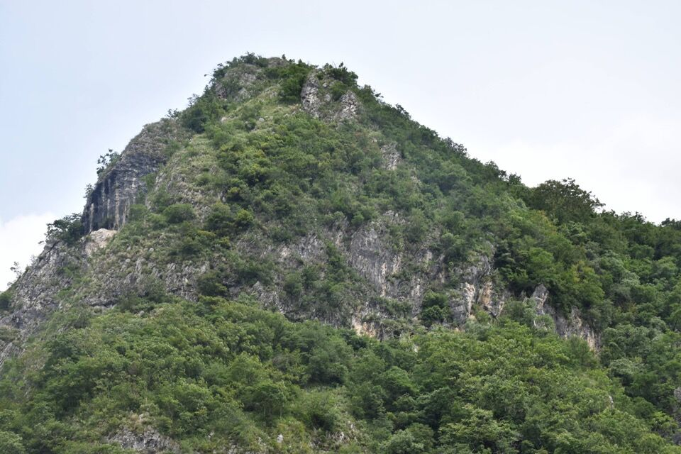

Un sabato di maggio avevo qualche ora libera la mattina per cui sono andato sul Glemine, dato che non c'ero mai stato; qualche idea in testa ce l'avevo.
Parto dal Duomo e mi avvicino - non senza difficoltà dato l'intrico di sentieri, alle falesie del Glemine. Qui trovo degli arrampicatori a cui chiedo informazioni sulla Cjase dai Cuarvats: non sanno di cosa io stia parlando.
Torno un po' indietro e trovo il sentiero: nessuna indicazione, nessun segno, traccia totalmente inselvatichita: mah!
Il brevissimo ed incerto sentiero, in mezzo ad una giungla di ortiche, mi porta alla Cjase dai Cuarvats: peccato che evidentemente ai gemonesi non interessi nulla di questo luogo - che è una antica specola miliare citata da documenti risalenti al 1268 (sic) - tanto che il tetto rischia di crollare da un momento all'altro (entra acqua).
Il Candolini nella sua immensa opera sui monti di Gemona scrive che «[...] Da questi riferimenti antichi si comprende che le vedette di guardia erano due: una "a mezzo il monte" e l'altra sulla cima del Glemine. Perciò si può ragionevolmente presumere anche l'esistenza di un sentiero di collegamento fra la specola "a mezzo il monte" con quella posta sulla vetta. [...] Alcune testimonianze di persone anziane confermano che tempo fa era possibile scendere dal Glemine lungo tale traccia (NdR: una labile traccia che dal troi da cenglùte scende a fianco dell'alveo del Glemineit) e giungere alla Cjase dai Cuarvats».
Tre metri mi bastano per dissuadermi totalmente: un intrico inestricabile di rovi. Che bella idea che è stata venire coi pantaloni corti che fa caldo!
Torno indietro a vado ad imboccare la Scjale Vuàrbe, ovvero il sentiero - inspiegabilmente non riportato sulla Tabacco - che porta sulla cima q572 del Glemine. Ahimé non è conosciuto col nome locale ma solo come via di discesa per chi arrampica sullo spigolo... che tristezza!
Perché scala cieca? Perché l'ultima parte si svolge lungo un canalino apparentemente chiuso in alto.
Ma che bella vista sul Deneâl e sul Cjampón! Mi sono portato il binocolo per studiare cose che interessano a me.
Tipo, ma qua lo conosco già bene, il selvaggio sperone del Cjamoç.
A sx l'orrido canalone della Crete Porie, tutto percorribile anche se con qualche difficoltà nella parte finale. Bravi quelli del Giupet, però che gaffe a dare al percorso addirittura i loro nomi: per la Crete Porie ci sarà passata chissà quanta gente prima, tanto che si trovano relazioni della salita sia su In Alto che sul libricino del Tivinella.
Si nota poi la Pale del Cjampón con la scjalùte, ciò l'esposta cengia su cui passa il leggendario troi dal cjamoç.
Quel prato sulla sx dovrebbe essere il Plan di Çucat, dove finisce il sentiero per i prâs d'Ambrusêt: ancora non ho capito se in quel punto si può attraversare o no il riul Fontanàt; da questa foto sembra di no, da altre sembra di sì!
Il Nâs Grânt: il prato alla base (Flaugjél) non è un tutt'uno con i prati del Deneâl! Non è cosi facile!

Per completare il giro salgo alla cima q709.
 Torno un po' indietro e vado in cerca dell'attacco del troi da cenglùte, che è abbastanza evidente lungo il sentiero basso del Glemine.
Qui in foto il valloncello del riu Gleminéit; sul ghiaione è evidente il troi di mieç, che è 100-200m più alto del troi da cenglùte.
In sentiero è ancora ben tracciato seppur inerbito.
Il greto del riu Gleminéit.
Il Gleminéit è famoso perché è molto raro vederci scorrere acqua: la cascata si materializza solo dopo precipitazioni di portata eccezionale.
L'unico punto incerto - stranamente - è proprio sulla cenglùte (zona rocciosa sulla Tabacco), dove gli animali vanno un po' dappertutto. Francamente non è semplicissimo capire quale sia la traccia giusta, ma con un po' d'esperienza ci ho azzeccato sempre.
Il troi da cenglùte termina (oppure inizia) all'ultimo tornante del troi dai cincènt, prima di innestarsi sul troi di mieç e quindi sul troi di sière.
Come si vede, il sentiero è stato ben sbarrato: sia mai che qualcuno voglia percorrere e tenere vivo un vecchio sentiero. Ma capisco anche che già qualcuno si è fatto venire a recuperare perché si era perso: non saprei quale sia la soluzione.
Dalla macchina vedo il Glemine con la Cjase dai Cuarvats sotto le paretine gialle: torneremo in inverno.
